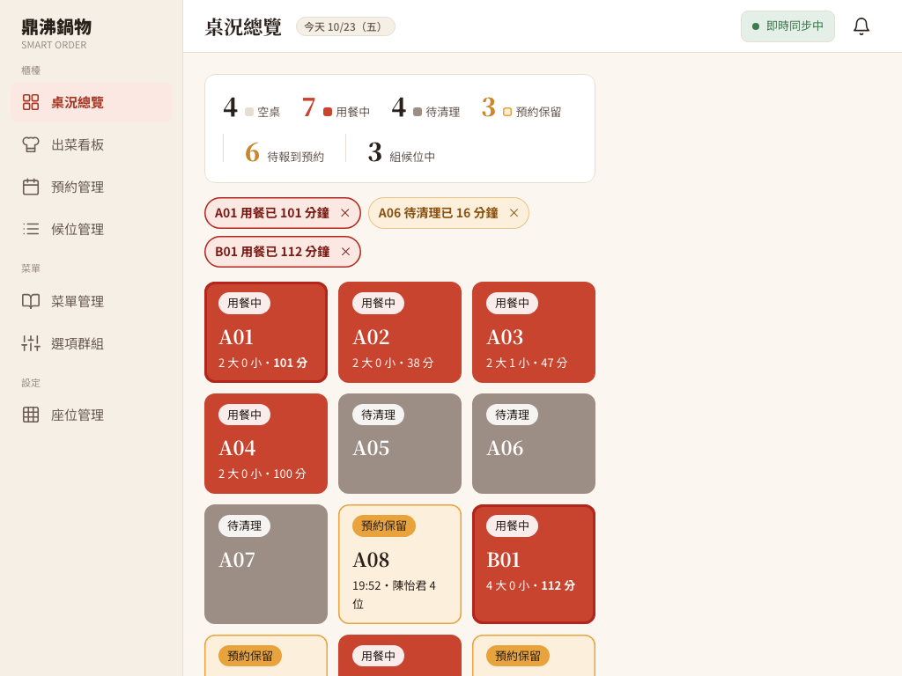

M2 規格裡兩個還沒做的排程
- 用餐超時掃描：每分鐘一次，找出用餐超過 100 分鐘的桌，推給櫃檯。
- 待清理提醒：每 5 分鐘一次，找出結帳後超過 15 分鐘還沒清潔完成的桌。
- 手動觸發 API：店長可以立刻跑一次，demo 不用真的等。
- 桌況總覽（S-02）的提醒列：收到推播就列出「A01 用餐已 101 分鐘」，點一下就能處理。
這兩個排程寫在 M2 規格與 API 規格的排程表裡，原本還沒有實作；這次直接補齊，屬於整合成果，不是作者的缺失。
候位排了十組，但有兩張桌其實可以處理
店裡規定一組客人用餐大約 100 分鐘，清桌大約 15 分鐘。這時候：
- A01 已經吃了 101 分鐘，可以去提醒客人最後加點、準備結帳。
- A06 16 分鐘前就結帳了，但忙到沒人去收，桌況一直是「待清理」，候位客人卻在門口等。
桌況總覽雖然有顯示用餐分鐘數，但十幾張桌的小字，店員在尖峰時不可能一直盯著看。系統應該主動告訴店員，而不是等店員自己發現。
排程只負責「找」和「通知」，不改任何資料
在用餐紀錄加一個「已通知超時」的欄位，推過一次就標記，避免重複提醒。缺點是要改資料表，而且店員如果剛好沒看到，就再也不會出現。
排程每次都從目前的資料重新算一次「哪些桌超時」，推出去就結束，不寫資料庫。重複推播由畫面負責合併（同一桌只顯示一筆、更新分鐘數）。好處是沒有要同步的狀態，重新整理頁面後下一次推播就會補回。
這種「重跑幾次結果都一樣、也不會改變資料」的性質叫做冪等（idempotent）。排程最怕的是「跑兩次就出事」，所以設計時優先讓它冪等。
規格的另一個重點：排程和手動 API 共用同一段程式。排程方法只負責「時間到了呼叫 Service、記 log」，真正的查詢與推播都在 Service 裡。這樣手動觸發測到的，就是排程實際會做的事。
兩個查詢、兩個排程、兩支手動 API
1. 找出超時與待清理的桌
- 用餐超時：用餐紀錄狀態是
OPEN、已經用餐超過 100 分鐘（分鐘數無條件捨去後大於 100，也就是滿 101 分鐘），而且桌位是啟用中。這條線和桌格變紅的條件完全一樣：審查時發現原本後端「滿 100 分鐘」就推，畫面卻要「超過 100 分鐘」才變紅，會出現提醒說超時、桌格卻還沒變紅的一分鐘空窗，所以統一成同一個定義。資料庫沒有擋「同一桌兩筆 OPEN」，所以依桌分組、取最早開的那筆，一桌只推一則。 - 待清理：桌況是
CLEANING，取這張桌最後一筆已結帳（PAID）用餐紀錄的結帳時間closed_at當作「開始待清理」的時間，超過 15 分鐘才推。結帳時「寫入結帳時間」和「桌子改成待清理」是在同一個交易裡完成，所以這個時間就是起算點。 - 查詢由資料庫做篩選與分組，不會把所有用餐紀錄載入記憶體再過濾。
2. 排程
Spring 的 @Scheduled 用 cron 描述時間：0 * * * * * 是每分鐘的第 0 秒、0 */5 * * * * 是每 5 分鐘。兩個都指定 zone = "Asia/Taipei"。排程裡的例外只記錄、不往外丟，否則一次錯誤可能讓之後的排程都停掉。
3. 手動觸發
POST /api/admin/scheduler/check-overtime 與 POST /api/admin/scheduler/remind-cleaning，只有店長（MANAGER）能用，回傳 {"job": "...", "affected": 推了幾桌}。規格特別強調：「你不可能在 demo 時等到晚上 11:30」，每個排程都要有手動入口。
4. 推播格式
推到櫃檯頻道 /topic/counter，格式跟同頻道既有的桌況推播一樣是平鋪欄位：
{"type":"TABLE_OVERTIME","tableId":1,"tableNo":"A01","minutes":101}（API 規格 §3.4 已定義）{"type":"TABLE_CLEANING_OVERDUE","tableId":6,"tableNo":"A06","minutes":16}（規格的事件表沒有列待清理事件，這次依同樣格式新增，命名在這裡記錄）
查詢在唯讀交易裡完成，交易結束後才逐桌推播；推播不包在交易裡，就不會在推播期間占著資料庫連線（上一篇候位文章的「連線池用光」就是反例）。某一桌推播失敗只記錄、繼續推下一桌，API 也不會因此回 500。
主要程式檔案
backend/src/main/java/tw/ispan/smartorder/service/TableReminderService.java：兩個掃描、門檻常數、推播。backend/src/main/java/tw/ispan/smartorder/repository/DiningSessionRepository.java：超時與待清理的查詢。backend/src/main/java/tw/ispan/smartorder/scheduler/TableReminderScheduler.java：每分鐘／每 5 分鐘的排程。backend/src/main/java/tw/ispan/smartorder/controller/TableSchedulerController.java：兩支手動觸發 API。frontend/src/services/realtime/useTableStatusSocket.js、frontend/src/features/admin/table/TableOverview.jsx：接收提醒、提醒列與桌格閃爍。
提醒要醒目，但不能吵
- 同一桌只顯示一筆：排程每分鐘都會推，提醒列用「桌號＋種類」當識別，收到新推播只更新分鐘數，不會一直疊加。
- 點了就能處理：點「A01 用餐已 101 分鐘」會進入 A01 的桌位詳情；點「A06 待清理已 16 分鐘」會打開原本的「清潔完成了嗎？」確認框，確認後桌子回到空桌，提醒自動消失。
- 可以關掉：按 × 之後，同一次超時不會因為下一分鐘的推播又跳回來；等這張桌的狀態變了（例如結帳），下一次超時才會重新出現。
- 自動清除：桌況重新抓取後，如果那張桌已經不是用餐中／待清理，就移除對應的提醒。
- 桌格閃爍：規格寫「超過 100 分鐘變紅並閃爍」。原本已有紅框，這次讓分鐘數閃爍，並加上
motion-safe:：使用者在系統設定「減少動態效果」時就不閃，這是無障礙設計的基本考量。
你可以照著做一次
預期數量用另外寫的 SQL 從資料庫算出來，再跟 API 回傳的數字比對，這樣才不是「拿程式驗證程式自己」。
先看權限。不登入呼叫兩支手動 API 應回
401；用 COUNTER 呼叫應回403；MANAGER 回200。準備用餐時間。開兩張桌，用 SQL 把開桌時間分別往前推 101 分鐘與剛好 100 分鐘。呼叫
check-overtime，回傳的affected要等於用 SQL 算出「用餐滿 101 分鐘的啟用桌」的數量；剛好 100 分鐘那桌不算（規則是「超過」100 分鐘）。再呼叫一次，數字不變。把超時那桌暫時設成停用，數量要少 1。準備待清理時間。讓兩張桌變成待清理，各配一筆 16 分鐘前、10 分鐘前結帳的紀錄。呼叫
remind-cleaning，數量要等於 SQL 算出「最後結帳超過 15 分鐘」的待清理桌；10 分鐘那桌不算。確認兩張桌的狀態都沒有被改。打開桌況總覽（1024 像素寬）。呼叫手動 API 後，提醒列出現「A01 用餐已 101 分鐘」「A06 待清理已 16 分鐘」，瀏覽器也收到
TABLE_OVERTIME推播；剛好 100 分鐘與 10 分鐘的桌沒有提醒；A01 桌格的分鐘數在閃爍。再推一次，提醒仍然只有一筆。處理提醒。點待清理提醒 → 出現清潔確認 → 按「清潔完成」→ 桌子回到空桌、提醒消失。按超時提醒的 ×，下一次推播不會再跳出來。重新整理後再推一次，點超時提醒會進入 A01 的桌位詳情頁。
等真的排程。不按任何手動 API，等待下一個整分鐘，瀏覽器會自己收到
TABLE_OVERTIME（最終驗收那次等了 6 秒，前一次 26 秒）。
提交與驗證紀錄
程式版本：Git commit 352162a。
HTTP 與資料庫檢查
提醒專項 16 項全部通過（權限、數量與獨立 SQL 一致、剛好 100 分鐘的邊界、停用桌、重跑穩定、不改桌況）；另重跑 36 項既有基線也全部通過。查看完整 HTTP 紀錄。
瀏覽器操作檢查
12 項全部通過，包含真的每分鐘排程自己推播、提醒合併、清潔確認流程與 1024 像素版面。查看完整瀏覽器紀錄。


測試在隔離的 MySQL 5.7 容器進行；開桌與結帳時間是用 SQL 往前推，紀錄名稱裡有標明。獨立程式審查沒有 P1／P2；三個 P3 中，「100 分鐘邊界」與「推播比桌況重抓晚到時殘留舊提醒」已修正（收到推播時若目前桌況已對不上就不加入）；第三點「程式假設伺服器（JVM）時區是台北」屬於全專案共用的時區設定，列入 Harry 的共用技術地基（L0）整理。
前輩回饋、報告與履歷
技術前輩的建議
寫排程前先問兩個問題：「跑兩次會不會出事？」「demo 時怎麼立刻看到效果？」第一個問題讓你把排程設計成冪等，第二個問題讓你一開始就把邏輯放在 Service、排程和手動 API 都只是呼叫它。
提醒類功能的難處在「醒目但不吵」。同一件事只提醒一次、能關掉、處理完自動消失，這些細節決定店員會不會開始無視提醒。
這個功能用到的技術
- Spring
@Scheduled與 6 欄位 cron、時區設定 - JPQL 分組查詢（GROUP BY／HAVING）與投影介面
- 唯讀交易與「推播不放在交易裡」的連線管理
- WebSocket（STOMP）推播到櫃檯頻道
- 冪等設計：每次重算、不存提醒狀態
- React 狀態合併、提醒去重、
prefers-reduced-motion無障礙 - 用獨立 SQL 驗證 API 結果、Playwright 擷取 WebSocket 訊息
專題報告與履歷可以這樣寫
報告：先放情境（A01 吃 101 分鐘、A06 16 分鐘沒收），再現場按手動觸發，讓台下看到提醒列即時出現、點一下就清潔完成。接著說明「排程與手動 API 共用同一段程式」和「冪等」這兩個設計原則。
履歷：「參與餐廳桌位管理開發，以 Spring 排程實作用餐超時與待清理提醒，透過 WebSocket 即時推送至櫃檯畫面，並提供管理端手動觸發 API 供展示與維運使用。」請寫「參與」，不寫成獨立完成整個桌位模組。
新手名詞表
- 排程（scheduler）
- 定時自動執行的程式，例如每分鐘檢查一次超時的桌。
- cron
- 描述「什麼時候執行」的寫法。Spring 用 6 個欄位：秒、分、時、日、月、星期。
0 */5 * * * *是每 5 分鐘的第 0 秒。 - 冪等（idempotent）
- 同一件事做一次或做很多次，結果都一樣。排程常常會重跑，所以最好設計成冪等。
- API（Application Programming Interface，應用程式介面）
- 前端或其他程式呼叫後端功能的網址與規則。
- HTTP 狀態碼 200／401／403
- HTTP 是 Hypertext Transfer Protocol（超文字傳輸協定）。200 成功；401 沒有登入；403 有登入但角色沒有權限。
- COUNTER／MANAGER
- 店員角色：COUNTER 是櫃檯，MANAGER 是店長。手動觸發排程只限 MANAGER。
- JPQL（Java Persistence Query Language，Java 持久化查詢語言）
- 用 Java 物件名稱寫的查詢語言，最後會轉成 SQL（Structured Query Language，結構化查詢語言）。
- GROUP BY／HAVING
- GROUP BY 把資料依某欄位分組（例如依桌）；HAVING 是對分組後的結果再篩選（例如「最後結帳時間超過 15 分鐘」）。
- 交易（transaction）與唯讀交易
- 交易把一組資料庫操作當成一次完整的動作；唯讀交易只讀不寫。交易期間會占用一條資料庫連線，所以不要在裡面做推播這種慢動作。
- WebSocket 與 STOMP
- WebSocket 是瀏覽器和伺服器之間保持開著的連線，伺服器可以主動推訊息；STOMP（Simple Text Oriented Messaging Protocol，簡單文字導向訊息協定）讓瀏覽器訂閱某個頻道，例如
/topic/counter。 - S-02
- UI（User Interface，使用者介面）規格裡的畫面編號，S-02 是櫃檯的桌況總覽。
- prefers-reduced-motion 與 motion-safe
- 作業系統的「減少動態效果」設定。Tailwind 的
motion-safe:前綴代表「只有使用者沒有要求減少動態時才套用」，閃爍效果就加在這裡。 - Playwright
- 用程式控制瀏覽器的工具，可以自動點擊、截圖，也能讀到 WebSocket 收到的訊息。
- SHA／Git commit
- SHA 是 Secure Hash Algorithm（安全雜湊演算法）；Git 用它幫每個版本（commit）產生識別碼。